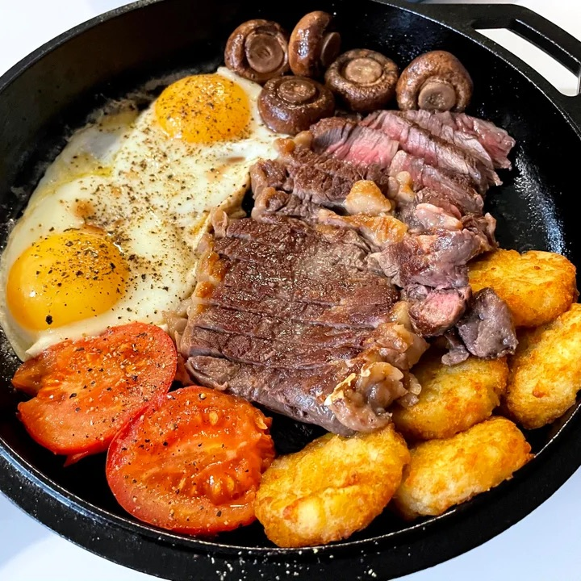

Steak Breakfast

Description
A full, hearty breakfast to start your day right!
Ingredients
- 1 Ribeye steak
- 2 Eggs
- 4-5 Pre-packaged hashbrowns
- 1 Tomato, half sliced (or cherry tomatoes)
- 4-5 Brown Mushrooms
- 1/2tbsp Butter
Steps
- Bake hashbrowns according to package.
- Rub steak with oil and salt.
- Wash and dry mushrooms and tomatoes.
- Set cast iron skillet on high heat (no oil) 3-5 minutes before hashbrowns are ready.
- Remove hash browns when done; lower oven to 130c.
- Place tomato, mushrooms, and steak in skillet.
- Sear both sides of steak for one minute each.
- Season vegetables and add olive oil.
- Place in oven for 5-7 minutes.
- Remove skillet from oven, placing on medium stove heat. Remove steak to rest.
- Butter skillet, brush excess onto resting steak.
- Crack eggs on skillet, season to taste.
- Remove skillet from heat.
- Slice and add steak back to skillet.
- Serve! No need to plate.
This recipe and associated image were sourced from /r/recipes.